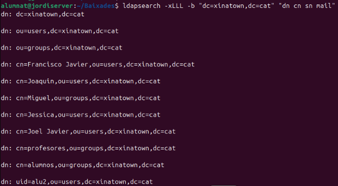
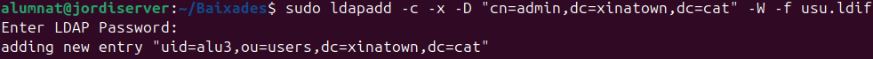
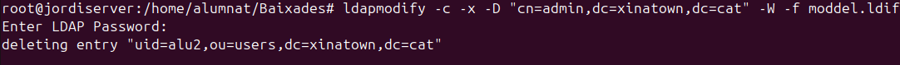
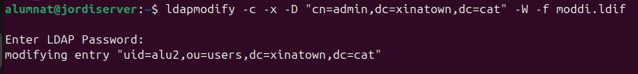

Gestió de Directori LDAP
Aqui vorem diferens tipus de comandes ldap per a gestionar el nostre domini.
| Comanda | Funció principal |
|---|---|
ldapsearch |
Buscar informació en LDAP |
ldapadd |
Afegir noves entrades |
ldapmodify |
Modificar o afegir entrades |
ldapdelete |
Eliminar entrades |
1. ldapsearch
La comanda ldapsearch permet cercar informació dins d'un directori LDAP. Alguns exemples:
ldapsearch -xLLL -b "dc=xinatown,dc=cat" "dn cn sn mail"
Busca totes les entrades i retorna dn, cn, sn i mail. Exemple:

ldapsearch -xLLL -b "dc=xinatown,dc=cat" "objectClass=posixGroup"
Filtra només les entrades de tipus posixGroup. Exemple:

ldapsearch -xLLL -b "dc=xinatown,dc=cat" "uidNumber=1002"
Cerca un usuari amb un identificador específic (uidNumber=1002). Exemple:

2. ldapadd
S'utilitza per afegir entrades al directori LDAP.
Opció 1: Utilitzant ldapadd
Comanda:
ldapadd -c -x -D "cn=admin,dc=xinatown,dc=cat" -W -f usu.ldif
Fitxer usu.ldif:

Execució de la comanda: 
Opció 2: Utilitzant ldapmodify
Comanda:
ldamodify -c -x -D "cn=admin,dc=xinatown,dc=cat" -W -f mod.ldif
Fitxer usu.ldif: (Per exemple podem afegir contingut als usuaris ja creats)
dn: uid=alu3,ou=users,dc=xinatown,dc=cat
changetype: modify
add: mail
mail: alu3@example.com
Execució del codi:

Amb slapcat podem vore com apareix ara el correu dins del usuari
3. ldapdelete
Es fa servir per eliminar entrades LDAP. Hi han dues maneres: una es amb ldapdelete i l'altra es aprofitar la comanda anterior ldapmodify amb un fitxer ldif.
Opció 1: Eliminació directa
ldapdelete -c -x -D "cn=admin,dc=xinatown,dc=cat" -W "uid=alu3,ou=users,dc=xinatown,dc=cat"
Execució del codi:
Si fem un search podrem vore que no apareix

Opció 2: Utilitzant ldapmodify
Fitxer moddel.ldif:
dn: uid=alu2,ou=users,dc=xinatown,dc=cat
changetype: delete
Comanda:
ldamodify -c -x -D "cn=admin,dc=xinatown,dc=cat" -W -f moddel.ldif
Execució del codi:

4. ldapmodify
4.1. changetype: modify
Afegir un correu electrònic:

Fem un ldap modify sobre el fitxer modi.ldif
ldapmodify -c -x -D "cn=admin,dc=xinatown,dc=cat" -W -f dades.ldif

Fem un search per comprovar que s'ha afegit el correu
Modificació combinada:

Fem un ldap modify sobre el fitxer modi.ldif
ldapmodify -c -x -D "cn=admin,dc=xinatown,dc=cat" -W -f dades.ldif

Fem un search per comprovar que s'ha afeit els nous sn / cognoms i que tambe s'ha eliminat el correu electronic

4.2. changetype: modrdn
Modificar el cn de l'usuari:
Fem un ldap modify sobre el fitxer modi.ldif
ldapmodify -c -x -D "cn=admin,dc=xinatown,dc=cat" -W -f dades.ldif

Fem un search per comprovar que s'ha canviat lo uid